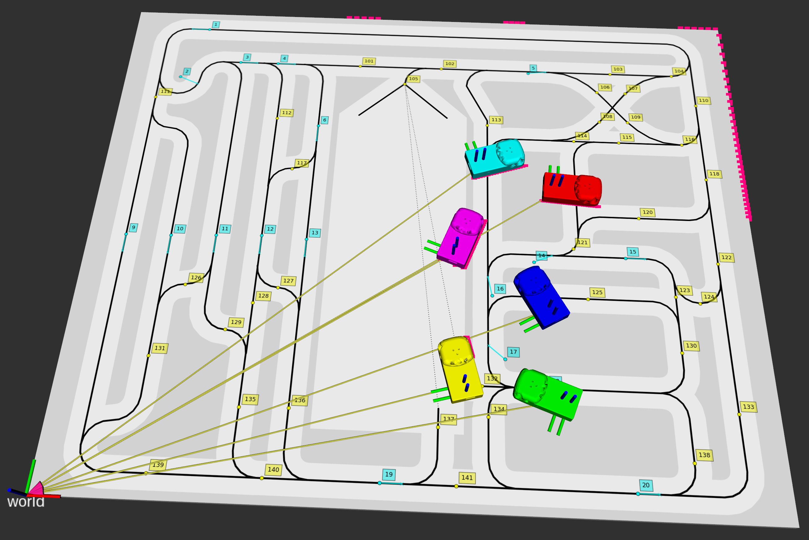

Package amsagv
Autonomous Mobile Systems (AMS) Automated Guided Vehicle (AGV)
AGV
Use SSH to connect to the AGV:
ssh pi@192.168.000.000 #EDIT the IP address and user name!
You can use private/public keys to make the SSH authorization:
ssh-keygen
ssh-copy-id pi@192.168.000.000 #EDIT the IP address and user name!
Installation
Edit the ROS setup file (~/ros/setup.bash):
#!/bin/bash
source "/opt/ros/noetic/setup.bash"
[ -f "${HOME}/ros/work/devel/setup.bash" ] && source "${HOME}/ros/work/devel/setup.bash"
export ROS_MASTER_URI="http://127.0.0.1:11311" #EDIT IP address of the master!
export ROS_IP="127.0.0.1" #EDIT IP address of the local machine!
export ROS_NAMESPACE="" #EDIT the namespace!
export ROS_WORKSPACE="${HOME}/ros/work"
export EDITOR="nano"
echo "ROS MASTER=${ROS_MASTER_URI} IP=${ROS_IP} NS=${ROS_NAMESPACE}"
Make sure that the file ~/.bashrc contains the following lines:
alias ROS='source ~/ros/setup.bash'
ROS
Reload the BASH environment (e.g. source ~/.bashrc or close all open BASH sessions).
Create a ROS workspace if it does not exist yet:
mkdir -p ~/ros/work/src
cd ~/ros/work
catkin_init_workspace src
catkin_make
Reload the BASH environment again.
Copy amsagv package to the AGV (into the folder ~/ros/work/src).
agv.py
rosrun amsagv agv.py
Parameters (2)
- ~agv_frame_id
- Name of the AGV frame
- ~odom_frame_id
- Name of the odometry frame
Subscribers (1)
- cmd_vel [geometry_msgs/Twist]
- Velocity commands subscriber.
Publishers (2)
- line [amsagv_msgs/LineStamped]
- Line sensor publisher
- odom [nav_msgs/Odometry]
- Odometry publisher
agvapi.py
Interface for serial communication with the AGV driver
rosrun amsagv agvapi.py
Description
It contains a simple test program that sets constant motor velocities and outputs sensor readings.
control_line.py
rosrun amsagv control_line.py
Subscribers (2)
- line [amsagv_msgs/LineStamped]
- Line sensor subscriber
- tag [amsagv_msgs/TagStamped]
- Tag subscriber
Publishers (1)
- cmd_vel [geometry_msgs/Twist]
- Velocity commands publisher.
control_point.py
rosrun amsagv control_point.py
Publishers (1)
- cmd_vel [geometry_msgs/Twist]
- Velocity commands publisher.
control_point_odom.py
rosrun amsagv control_point_odom.py
Subscribers (1)
- odom [nav_msgs/Odometry]
- Odometry subscriber
Publishers (1)
- cmd_vel [geometry_msgs/Twist]
- Velocity commands publisher.
display.py
Display of the ground area
rosrun amsagv display.py
Parameters (2)
- ~robot_frame_id = "robot"
- Name of the robot frame
- ~world_frame_id = "world"
- Name of the world frame
Subscribers (2)
- goal [geometry_msgs/PoseStamped]
- Subscriber to the goal pose.
- path_tags [amsagv_msgs/TagsStamped]
- Subscriber to the path, which is given as a list of comma separated tag IDs.
Publishers (2)
- path [nav_msgs/Path]
- Publisher of the path.
- start_goal_tag [amsagv_msgs/TagsStamped]
- Publisher of the start and goal tag ID (the two values are separated by a comma). The message is published when a new goal is set and the start node is known.
Description
This program provides a simple user interface for visualization of the ground area.
Use left mouse click to define the goal tag. When a new goal is defined and the start tag is known, a message with the start and goal tag ID are published on the topic start_goal_tag. The start tag is defined based on the current pose of the robot frame with respect to the world frame. You can use right mouse click to manually define the start tag. Alternatively, the goal pose can also be set throught the topic goal.
When a new message on the topic path_tags is received, which contains a list of comma separated tags that represent the path, the path is drawn in the graph and a message with the path points is published on the topic path.

front.py
rosrun amsagv front.py
Subscribers (1)
- line [amsagv_msgs/LineStamped]
- Odometry subscriber
graph.py
rosrun amsagv graph.py
laser_sim
Laser scanner simulator
rosrun amsagv laser_sim
Parameters (11)
- ~boundary_shape = "0.0 0.0 2.2 0.0 2.2 1.8 0.0 1.8 0.0 0.0"
- A space-separated list of connected points that describe the shape of the boundary. Each point is represented as a pair of x and y value.
- ~fov = 180
- Laser scanner field of view (FOV), in degrees.
- ~frame_age = 1.0
- Maximum frame age, in seconds.
- ~frame_off = 0.0
- Maximum frame time offset, in seconds.
- ~laser_frame_id = "laser"
- Name of the laser frame, in which the laser measurements are simulated.
- ~range_max = 1.5
- Maximum laser ray range.
- ~range_min = 0.0
- Minimum laser ray range.
- ~ray_count = 180
- Number of laser rays.
- ~robot_frame_ids = ""
- A space-separated list of robot frame names.
- ~robot_shape = "-0.023 -0.048 0.170 -0.048 0.170 0.048 -0.023 0.048 -0.023 -0.048"
- A space-separated list of connected points that describe the shape of the robot. Each point is represented as a pair of x and y value.
- ~world_frame_id = "world"
- Name of the world frame. All poses of the object are supposed to be available with respect to this world frame.
Publishers (1)
- laser [sensor_msgs/LaserScan]
- Laser scan publisher.
Description
This is a simple simulator of a laser scanner.
Usage
Define all the static transformations.
roslaunch amsagv global.launch
Add static:=true for static definition of the robots.
Start laser simulator.
rosrun amsagv laser_sim _laser_frame_id:="laser1" _robot_frame_ids:="base0 base2 base3 base4 base5" _fov:=180 _ray_count:=180
Open visualization in RViz.
roslaunch amsagv rviz.launch

localisation.py
rosrun amsagv localisation.py
Subscribers (2)
- odom [nav_msgs/Odometry]
- Odometry subscriber
- tag [amsagv_msgs/TagStamped]
- Tag subscriber
path_converter.py
rosrun amsagv path_converter.py
Parameters (1)
- ~world_frame_id = "world"
- Name of the world frame
Subscribers (1)
- path_tags [amsagv_msgs/TagsStamped]
- Subscriber to the path, which is given as a list of tag IDs
Publishers (1)
- path [nav_msgs/Path]
- Publisher of the path
path_planning.py
rosrun amsagv path_planning.py
Subscribers (1)
- start_goal_tag [amsagv_msgs/TagsStamped]
- Subscriber to the start and goal tag ID
Publishers (2)
- path_actions [amsagv_msgs/ActionsStamped]
- Publisher of the actions
- path_tags [amsagv_msgs/TagsStamped]
- Publisher of the path, which is given as a list of tag IDs
PathPlanning.py
rosrun amsagv PathPlanning.py
set_odom_frame.py
rosrun amsagv set_odom_frame.py
Subscribers (1)
- initial_pose [geometry_msgs/PoseWithCovarianceStamped]
- Initial pose subscriber
tag_beep.py
rosrun amsagv tag_beep.py
Subscribers (1)
- tag [amsagv_msgs/TagStamped]
- Tag subscriber
tag_converter.py
rosrun amsagv tag_converter.py
Parameters (2)
- ~robot_frame_id = "robot"
- Name of the robot frame
- ~world_frame_id = "world"
- Name of the world frame
Subscribers (3)
- goal [geometry_msgs/PoseStamped]
- Subscriber to the goal pose.
- goal_tag [std_msgs/String]
- Subscriber to the goal tag.
- path_tags [std_msgs/String]
- Subscriber to the path, which is given as a list of comma separated tag IDs.
Publishers (2)
- path [nav_msgs/Path]
- Publisher of the path.
- start_goal_tag [std_msgs/String]
- Publisher of the start and goal tag ID (the two values are separated by a comma). The message is published when a new goal is set and the start node is known.
tag_reader.py
NFC-tag reader
rosrun amsagv tag_reader.py
Publishers (1)
- tag [amsagv_msgs/TagStamped]
- Tag publisher
Description
This program publishes a ROS message with the ID of the tag whenever a new tag is detected with MFRC-522 module that is attached to the Raspberry Pi.
Installation
This program requires an enabled SPI interface on the Raspberry Pi and Python libraries for that interface.
#Use sudo raspi-config to enable SPI interface or:
sudo sed -i '/^[# ]*dtparam=spi=.*/d' /boot/config.txt
echo 'dtparam=spi=on' | sudo tee -a /boot/config.txt
sudo apt-get update
sudo apt-get upgrade
sudo apt-get install python3-dev python3-pip
sudo pip3 install RPi.GPIO
cd
git clone https://github.com/lthiery/SPI-Py.git
cd ~/SPI-Py
sudo python3 setup.py install
#cd
#git clone https://github.com/pimylifeup/MFRC522-python.git
#git clone https://github.com/naleefer/MFRC522-python.git
Subscribing to the tag topic
To subscribe to the tag topic, add the following lines to your program.
Add the following line to the import section:
from amsagv_msgs.msg import TagStamped
Add the following line to the __init__ method of your class:
self._subTag = rospy.Subscriber('tag', TagStamped, self._handleTag)
Add the following method to your class:
def _handleTag(self, msg):
print('Tag data: {}'.format(msg.tag.id))
tags_converters.py
rosrun amsagv tags_converters.py
Parameters (3)
- ~robot_frame_ids = "robot').split(' "
- Names of the robot frames
- ~robot_names = "robot').split(' "
- Names of the robot
- ~world_frame_id = "world"
- Name of the world frame